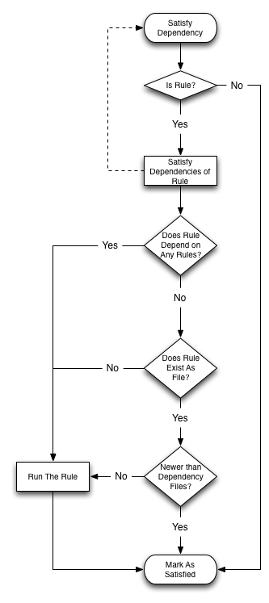

More and more programs today are being programmed as multithreaded applications. The goal of this MP is to give you more practice writing multithreaded applications and to expose common pitfalls that occur while designing a program to work in a parallel manner. Additionally, you will need to make use of synchronization primitives to protect memory shared amongst the threads.
You are tasked with writing an application which will imitate the common make utility. We have provided a parse function which will list dependencies and commands to run for different target values. You will need to use this parse function to store the work that needs to be done. Then using a fixed pool of threads, you will make sure that all commands are executed after their dependencies. When there is less work to be done than there are threads, the remaining idle threads should sleep.
Before starting you should read the Wikipedia article on Make.
parmake [ -f makefile ] [ -j threads ] [ targets ]If a makefile is not specified, ./makefile or ./Makefile should be used in that order, if they exist (see access()). Return a non-zero value if neither of these files exist. If the number of worker threads -j is not specified, the default value of 1 should be used. The j worker threads are in addition to the one main thread. The space seperated list of targets will always come last and is optional. You will need to save any targets given for use in Part 2. The man page for getopt() shows an example of how to locate the position of targets within argc.
Next, the main thread should parse the makefile. The makefile will always consist of one or more rules of the form:
target [target ...]: [dependency ...]For example:
[command 1]
.
.
[command n]
rule1: rule2 rule3If you are unfamiliar with the syntax do not be afraid. We have provided you with a parsing function, parser_parse_makefile().
commandtoberun withargs
commandtoberun2 withargs
rule2:
othercommand
rule3 rule4:
finalcommand
When invoking the parser you will have to provide "call-back" functions and the list of targets from Part 1. This means you will have to pass function pointers of the type defined in parser.h. These callback functions will be called from parser_parse_makefile() providing you with the parsed strings. For dependencies and commands, the target to which the dependency or command belongs is also passed back.
The list of targets should be a NULL-terminated array of strings similar to that of argv. The targets are used by the parser to select the correct rules (for example 'make clean' only runs the clean target). If no targets are given on the command line, the list of targets will only include the terminating NULL pointer. Those curious of the implementation can view the source in parser.c although this is not necessary for a functioning MP.
We have provided an implementation of a queue for you to store rules. It can be viewed in queue.h.
Once all the rules have been parsed, you will want to decide what rules should run. There are a few simple rules to follow:
For your convenience these rules are captured in the following flow chart:
The number of threads running rules is given as the command-line option -j. Each worker thread will be in charge of processing rules. This consists of determining whether its dependencies have been fulfilled and then executing any associated commands. There are several important concurrency requirements:
...that is, every thread should be as busy as possible processing rules if there is work to be done.
You can assume all makefiles will be in valid Makefile style syntax as described previously as well as have no circular dependencies.
Reordering rules that may be run at the same time to achieve global optimal efficiency is not required. The dependency graph might have natural choke points where one task limits all the others.
You will receive 0 points if your implementation uses sleep() or busy waiting.
You must only ever launch T threads. Do not keep re-spawning new threads for every rule.
We have provided you with six test files for you. You can find the expected output by running them with GNU "make", which follows the same rules as your program. If you choose not to printf() the commands you are going to run, your output will match make -s.
To compile, run the following commands from a command prompt on a Linux machine:
%> make clean
%> make
To run the executable,
%> ./parmake [ -f makefile ] [ -j threads] [ targets ]
For example:
%> ./parmake -f testfile4 -j 2
This should generate the same output as:
%> make -f testfile4 -j 2
=== OR ===
%> make -s -f testfile4 -j 2